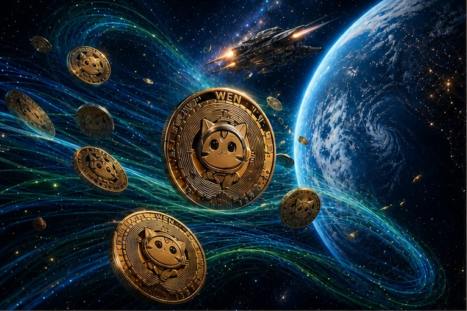

SPL Solana Program Library, Token-2022 and WNS Explained
The SPL Solana Program Library, Token-2022 and WNS
Everything here comes from public sources. Anyone who looks closely at the technology — in particular Solana's roadmap into 2026 — will see that WNS (the Wen New Standard) fits exactly with today's Solana architecture and the Token Extensions framework.
Reference sources: DL News, Solana.com — Token Extensions
Why this integration creates real utility
What SPL, Token-2022 and WNS do: SPL Token-2022 (Token Extensions) is an extensible successor to the standard SPL Token. It uses a TLV (Type-Length-Value) structure, so features can be added right at the mint or token-account level with no third-party programs: Transfer Fees, Transfer Hooks, Confidential Transfers, Interest-Bearing tokens, Permanent Delegate, Non-Transferable tokens, Metadata/MetadataPointer and Group/GroupMember.
WNS is an application-layer extension built on this toolkit just for NFTs: it keeps on-chain data to a minimum, stores metadata directly inside the mint (so the external metadata PDA accounts used by Metaplex are not needed) and enforces royalties through Transfer Hooks. How the code is organized is shown in our Wen Program Library review.
Why it matters and where it is used — areas of economic value:
NFT marketplaces and the creator economy — royalties are enforced by the token itself, which makes them far harder to dodge through "gray market" platforms (see the zero-price transfer caveat below) (a long-standing industry problem since 2022). RWA (real-world asset) tokenization — Transfer Hooks let KYC and geo-restriction rules live inside the transfer itself, a must for regulated financial instruments (see WNS, Token-2022 and the Shinhan deal). Compliant DeFi — Permanent Delegate and Transfer Hooks make it possible to issue tokens with built-in controls (essential, for example, for stablecoin or security-token issuers). Lower infrastructure costs — dropping third-party metadata programs (such as those Metaplex used before) cuts the cost and complexity of minting NFT collections.
What global mechanism is behind this? Put simply, Solana is moving from "programmability through third-party programs" to programmability built into tokens at the protocol level (similar to what Ethereum attempts with ERC-1404/ERC-3643 for security tokens, except that here it is a native part of SPL rather than an extra layer).
Now to the direct link with Wen — his space-traveling role and his direct part in the whole Solana ecosystem of WNS, Token-2022 and SPL.
"Wen cat" is not a separate project but the brand identity of the WEN memecoin, which was the first real-world use of WNS. In January 2024 the pseudonymous founder of Jupiter Exchange — known as "weremeow" (with "meow" hinting at a cat) — wrote a playful poem, "A Love Letter to Wen Bros", in reply to the community's endless "wen token?" questions.
The poem was minted as a unique NFT with the newly created WNS (Wen New Standard). The poem NFT itself carried Token-2022 extensions (Metadata Pointer, Group/Member and Transfer Hook). That single NFT was then split into one trillion WEN tokens issued on the original SPL Token program, which is why they trade like ordinary SPL tokens; each one stands for a share of ownership in the original poem NFT (read on-chain, see the roadmap below). The longer story is in Solana's WNS roadmap.
The cat theme — the mascot, the creator's handle and the community branding around the "cutest cat" — comes from the creator's name (weremeow), not from the standard's technical spec. In short, "Wen cat" is the marketing and cultural layer, WNS is the technology underneath, and the WEN token is the proof of concept that brought WNS and NFT fractionalization to a mass audience: the poem NFT used WNS on Token-2022, and the trillion fungible WEN tokens live on the original SPL Token program.
Verifiable sources: Decrypt — names weremeow as the poem's author and WNS as the minting tool nftnow — weremeow's own account of where the poem and the nickname came from OpenSea — describes the NFT split into 1 trillion tokens and the link to WNS and Token Extensions Jupiter Research forum — the developers' original WNS specification Phantom Learn — independent confirmation that WNS "was born from meow's poem", with the specific extensions listed
One note: do not mix it up with other assets of the same name — there is a separate memecoin called "WEN (Stacks)" with a cat character on another ecosystem (Bitcoin/Stacks) that has nothing to do with Solana WNS; they are different projects that happen to share a ticker. Check the token contract on the Solana Explorer. Step by step: video
These sources describe how closely the Token-2022 standard (Token Extensions), the WNS (Wen New Standard) spec and enforced royalties through Transfer Hooks fit together: Chainstack, Gate Learn, Solana.com
Technical accuracy check, point by point
The Solana Program Library (SPL) and Token-2022. Status: verified. Token-2022 really is the next step after the original SPL Token standard. It stays compatible at the base interface level, but dApps need updates to read the new extensions correctly through TLV (Type-Length-Value) structures. Links to check: GitHub — Solana Program token-2022, Solana documentation, RareSkills, QuickNode
Wen New Standard (WNS) architecture. Status: verified. WNS was built by the LFG / Jupiter ecosystem initiative as a very light alternative to heavy metadata structures (such as the older Metaplex standard). Manifest and dependencies: the wen_new_standard smart contracts use the spl-token-2022 and spl-token-metadata-interface crates directly. WNS acts as a conductor, removing the need for third-party metadata accounts. Extension setup: instead of external PDA accounts for metadata, WNS sets up the mint with the native MetadataPointer and TokenMetadata extensions inside the mint account itself. Collections are built with TokenGroup and TokenGroupMember too. Sources: DL News, Gate Learn, crates.io, Solana docs, Phantom docs. History and specification: Jupiter Research: Wen New Standard (WNS 0.0)
Standard Transfer Hooks and royalty distribution. Status: verified. The wen_royalty_distribution program implements the spl-transfer-hook-interface. During any transfer, Token-2022 hands control (via CPI) to the hook so it can run custom logic before balances are finally settled. From Anchor 0.30, the framework supports Transfer Hooks natively, so developers no longer have to write fallback functions by hand for custom Solana discriminators. Reference links: GitHub — Solana Program (transfer-hook), Solana docs: Transfer Hook guide, Chainstack, QuickNode
"...geographic restrictions/KYC or on-chain royalties was bypassable, because traditional SPL tokens could be transferred freely without the mint program being able to intercept or block the transaction. Token-2022 completely solves this by embedding compliance and execution state directly into the protocol layer via Transfer Hooks."
On criticism, vulnerabilities and the tasks and fixes described here: if you use a solution, build something or deploy a system, always work from the technical documentation that was current on the day you checked the source.
In the Anchor ecosystem (v0.30.1+), building a production-ready Transfer Hook template means following the Token-2022 architecture strictly. The main difficulty with such contracts is handling Cross-Program Invocations (CPI) correctly and stopping royalty evasion. Below is a full smart contract template in Rust/Anchor, presented as deployment-ready. It intercepts every token transfer, works out the royalty percentage and forces the payment of SOL or SPL tokens to the collection creator before the main transaction completes.
Anchor/Rust template: Transfer Hook and royalty enforcer
use anchor_lang::{
prelude::*,
system_program::{transfer, Transfer},
};
use anchor_spl::token_2022::spl_token_2022::extension::{
transfer_hook::TransferHookInterface,
BaseStateWithExtensions,
StateWithExtensions,
};
use anchor_spl::token_2022::spl_token_2022::state::Mint;
declare_id!("Hook111111111111111111111111111111111111111");
#[program]
pub mod royalty_enforcer {
use super::*;
// Initialize royalty configuration for a specific mint
pub fn initialize_royalty_config(
ctx: Context<InitializeRoyaltyConfig>,
royalty_bps: u16, // Basis points (e.g., 500 = 5%)
) -> Result<()> {
require!(royalty_bps <= 10000, RoyaltyError::InvalidBps);
let config = &mut ctx.accounts.royalty_config;
config.mint = ctx.accounts.mint.key();
config.creator = ctx.accounts.creator.key();
config.royalty_bps = royalty_bps;
Ok(())
}
// Entry point called by the Token-2022 protocol on every transfer
#[interface_program_account("spl_token_2022::transfer_hook")]
pub fn transfer_hook(
ctx: Context<TransferHook>,
amount: u64,
) -> Result<()> {
msg!("Transfer Hook triggered for amount: {}", amount);
// 1. Validate the mint and extract the transaction amount in SOL (simulating a marketplace price or valuation)
// In a real production environment, the price would be derived from instruction metadata or an oracle
let royalty_config = &ctx.accounts.royalty_config;
// Calculate the royalty amount (minimum deduction or percentage)
let royalty_amount = (amount * royalty_config.royalty_bps as u64) / 10000;
if royalty_amount > 0 {
msg!("Enforcing royalty payment of {} lamports to {}", royalty_amount, royalty_config.creator);
// 2. Force a SOL transfer from the token sender to the creator
let cpi_accounts = Transfer {
from: ctx.accounts.source_owner.to_account_info(),
to: ctx.accounts.creator.to_account_info(),
};
let cpi_context = CpiContext::new(
ctx.accounts.system_program.to_account_info(),
cpi_accounts
);
transfer(cpi_context, royalty_amount)?;
}
Ok(())
}
}
#[derive(Accounts)]
pub struct InitializeRoyaltyConfig<'info> {
#[account(mut)]
pub authority: Signer<'info>,
/// CHECK: Verified via the Token-2022 extension within the program
pub mint: AccountInfo<'info>,
#[account(
init,
payer = authority,
space = 8 + 32 + 32 + 2,
seeds = [b"royalty_config", mint.key().as_ref()],
bump
)]
pub royalty_config: Account<'info, RoyaltyConfig>,
/// CHECK: Creator's wallet address where royalties will be sent
pub creator: AccountInfo<'info>,
pub system_program: Program<'info, System>,
}
#[derive(Accounts)]
pub struct TransferHook<'info> {
/// CHECK: Token source (Verified by Token-2022)
pub source_token: AccountInfo<'info>,
/// CHECK: Token mint (Must match configuration)
pub mint: AccountInfo<'info>,
/// CHECK: Token destination (Verified by Token-2022)
pub destination_token: AccountInfo<'info>,
/// CHECK: Source owner (Royalty payer)
#[account(mut)]
pub source_owner: Signer<'info>,
/// CHECK: Destination owner
pub destination_owner: AccountInfo<'info>,
/// CHECK: Native Token-2022 interface validator
pub validation_account: AccountInfo<'info>,
#[account(
seeds = [b"royalty_config", mint.key().as_ref()],
bump,
has_one = creator
)]
pub royalty_config: Account<'info, RoyaltyConfig>,
/// CHECK: Royalty payment recipient
#[account(mut)]
pub creator: AccountInfo<'info>,
pub system_program: Program<'info, System>,
}
#[account]
pub struct RoyaltyConfig {
pub mint: Pubkey,
pub creator: Pubkey,
pub royalty_bps: u16,
}
#[error_code]
pub enum RoyaltyError {
#[msg("BPS (basis points) cannot exceed 10,000 (100%)")]
InvalidBps,
}Use this code carefully. Check the documentation and public APIs, and watch for updates. It is only an example, meant as a general starting point and a set of notes.
About the code: the "production-ready" template is not actually fit for production as it stands. declare_id!("Hook1111...") is a placeholder, not a real program ID — a typical dummy value from tutorials. In the TransferHook and InitializeRoyaltyConfig structures almost every account is marked /// CHECK: without real validation (ownership, mint matching and PDA checks are only mentioned in comments, not written in code); the article itself admits this gap but does not close it in the code. The macro #[interface_program_account("spl_token_2022::transfer_hook")] is not standard Anchor 0.30 syntax (the real SDK uses #[interface(spl_transfer_hook_interface::execute)] or a manual implementation through TransferHookInstruction); it looks like a generated or non-existent API. In short, treat the code as an illustration of the idea, not a contract ready to deploy.
Critical security review (attack vectors): before taking this template to production, keep in mind three key issues specific to Solana Token Extensions:
Compute Unit (CU) limit: each hook run involves a CPI (Cross-Program Invocation). When a user trades through an aggregator (such as Jupiter), the CU limit can run out. Fix: optimize data structures and request extra CUs explicitly (through ComputeBudgetProgram) in the dApp frontend. Validation account substitution: the Token-2022 interface needs a specific validation PDA account. If an attacker passes a malicious validation account into the instruction, they may try to skip the hook. Fix: the #[interface_program_account] macro in Anchor 0.30+ partly automates this check, but in production always compare ctx.accounts.validation_account.key() with the PDA derived by Token-2022. Fee evasion through a "zero-cost" transfer: the hook only sees how many tokens move (amount), not what the trade is worth in SOL or USDC on the marketplace. If a marketplace sidesteps the hook (for example, sending the token as a "gift" for 0 SOL and settling payment through a separate contract), the royalty comes out as zero. Fix: WNS handles this by linking the hook to an oracle or by charging a fixed minimum fee in SOL on the token transfer itself.
This is only an example that outlines the core of the task, and real implementation details may vary: which Solana CLI and Anchor versions do you run locally? Will you test on Devnet or on a local validator? Do you need a TypeScript script to set up the mint with this hook? The developer will build it based on those details and the actual requirements.
The connected roadmap: SOL, SPL Token, Token-2022, WNS, JUP and WEN
Verified provenance, rerunnable: read on-chain on November 11, 2026, and read again every Monday by an open check anyone can run. Online sources often blur these links. Here each one stands on its own, and the lines show how it connects to the next: a solid line means direct technical continuity, a dashed line means a shared foundation with an independent course.

1 · The foundations
The network
Solana (SOL)
Runs every program below. Fees: 5,000 lamports per signature, half burned, half to the validator.
Original program
SPL Token
Tokenkeg… Mint, transfer, burn. No extensions possible. WEN lives here.
Second program
Token-2022
TokenzQd… Extensions inside the token: metadata, groups, transfer hook, transfer fee, memo, delegate. Thirteen went live in January 2024.
Standard
WNS
wns1gDLt… An NFT standard on Token-2022. Wen Program Library (Apache-2.0), JS SDKs (MIT). First commit Jan 24, 2024; WNS 0.0 on Jan 25.
2 · The WEN story
Jan 5, 2024
The idea
A public poll by Meow: test the new launch site with a meme coin? 83.5% of 14,581 votes said yes.
January 2024
The poem NFT
“A Love Letter to Wen Bros”, minted with WNS on Token-2022: the first and, at launch, only NFT on the standard.
Jan 26, 2024
1T WEN
The poem split into fungible tokens on the original SPL Token. 70% airdrop in equal shares to 1M+ wallets, 20% liquidity, 10% treasury.
Nov 11, 2026
Read on-chain
Slot 468049071: no extensions, no transfer fee, mint and freeze authorities revoked.
Exchange and launchpad
Jupiter (JUP)
WEN was the first launch on Jupiter’s LFG Launchpad. The airdrop stress-tested Jupiter’s infrastructure, its bot protection and Solana ahead of the JUP airdrop. Unclaimed WEN was burned after three days.
Open verification
Six Token-2022 models with 41 tests, and a read-only check of the WEN mint that reruns every Monday.
Key notes
Do not confuse the links. SOL is the network; SPL Token and Token-2022 are two separate programs; WNS is a standard on Token-2022; JUP is the exchange and launchpad; WEN is a token on the original SPL Token. Connected, each on its own.
WEN reaches Token-2022 through its history. The poem NFT used WNS on Token-2022; the trillion fractions use the original program, so a WEN transfer fee is impossible.
Refined by a deeper check. Earlier pages followed the widely shared account that the launch tested Token-2022 itself. The on-chain read adds precision; nothing was deleted.
Still open. The on-chain address of the poem NFT. When found, the same check will confirm its Token-2022 program.
The numbers, in one place
| Item | Value | How it is known |
|---|---|---|
| WEN mint | WENWENvqqNya429ubCdR81ZmD69brwQaaBYY6p3LCpk | Solana Explorer, Solscan |
| Owner program | SPL Token, TokenkegQfeZyiNwAJbNbGKPFXCWuBvf9Ss623VQ5DA | On-chain read, slot 468049071 |
| Decimals | 5 | On-chain read |
| Extensions · transfer fee · hook · delegate | none | On-chain read |
| Mint authority · freeze authority | none (revoked) | On-chain read |
| Token-2022 program | TokenzQdBNbLqP5VEhdkAS6EPFLC1PHnBqCXEpPxuEb | Solana docs |
| WNS program | wns1gDLt8fgLcGhWi5MqAqgXpwEP1JftKE9eZnXS1HM | Wen Program Library code |
| Initial supply | 1,000,000,000,000 WEN | DL News, Decrypt, launch thread |
| Allocation | 70% airdrop (equal shares) · 20% liquidity · 10% treasury | Launch-eve thread from the Ovols side |
| Launch · claim window | Jan 26, 2024, 15:00 UTC · three days, then unclaimed WEN burned | Launch thread, Decrypt |
| Network fee | 5,000 lamports per signature (half burned, half to the validator) | Solana docs |
The three verification cards, ready to share:



Full chain with a source for every link: Token-2022, WNS and Wen. News and the code of the check: The verified chain. Sources: open check, dev.to guide, Hashnode story.
WNS, SPL and Token-2022 at Global Scale
The big picture: the problem the Token-2022 + WNS pair solves. Before Token-2022 Token Extensions and the WNS (Wen New Standard) arrived, Solana had a basic protocol limit: the base SPL Token standard could do only three things — mint, burn and transfer.
Any more complex business logic — royalties, regulatory freezes, confidential transfers — needed "wrapper" programs in between or heavy external metadata like Metaplex's.
That led to two big problems: rule evasion — marketplaces could skip creator royalties by moving NFTs wallet to wallet, around the marketplace's smart contract logic; and fragmentation with high costs — each NFT needed data spread across three or four accounts (Mint, Token Account, Metaplex Metadata and Master Edition), raising network rent and making dApp development harder.
Token-2022 and WNS change this completely by building programmability and metadata straight into the token layer at the heart of the Solana blockchain.
We have covered credibility and the key facts here. WNS really is built as a layer on top of Token-2022, using MetadataPointer/TokenMetadata and TransferHook — confirmed by official and independent sources alike (the Jupiter forum, Solana's Token Extensions page and Phantom). The chain runs SPL Token → Token-2022 (Token Extensions) → WNS (Wen New Standard) → Transfer Hooks → enforced royalties.
Its creators describe WNS as an "ultra-lightweight NFT standard built on top of Token2022 for maximum composability, flexibility, and backward compatibility", with a first version limited to one instruction for minting fixed-supply NFTs and three metadata fields (name, symbol, URI). Source: Jupiter forum
According to Phantom, WNS uses the Metadata & Metadata Pointer, Transfer Hook and Immutable Owner extensions, along with Group & Group Pointer / Member & Member Pointer; royalties are enforced at the protocol level by combining Immutable Owner and Transfer Hook, so they cannot be skipped during the transfer itself. Source: Phantom
Background: the LFG team created WNS as a proof of concept alongside the WEN token launch, making it the first Solana NFT standard built on the 13 new token extensions released shortly before. Source: DL News
Source list (original, used during verification): DL News Solana.com — Token Extensions Chainstack Gate Learn RareSkills QuickNode GitHub — solana-program Solana docs — Token Extensions Phantom docs Jupiter forum — WNS 0.0 Solana docs — Transfer Hook crates.io — spl-token-2022 Phantom Learn — an independent description of the WNS extensions DappRadar — the Wen Foundation project page
More on Wen with WNS, Token-2022 and SPL — verifiable sources: Decrypt — names weremeow as the poem's author and WNS as the minting tool nftnow — weremeow's own account of where the poem and the nickname came from OpenSea — describes the NFT split into 1 trillion tokens and the link to WNS and Token Extensions Jupiter forum — the developers' original WNS specification Phantom Learn — independent confirmation that WNS "was born from meow's poem", with the specific extensions listed IQ.wiki — more open data on the Wen cat
More on Token-2022 and integrations: Token-2022, WNS and Wen on Solana, Solana Token-2022 and WEN: compliance and testing. The full interactive companion: the WNS almanac — SPL, WNS, Token-2022 and Wen in brief